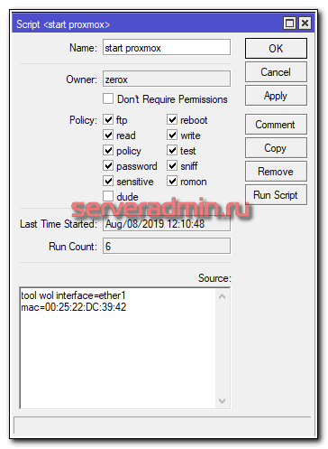

Не работает wake on lan в linux, как настроить
Zerox Обновлено: 08.08.2019 Полезные советы 10 комментариев 957 Просмотры
После недавнего обновления proxmox до 6-й версии перестал работать WoL. Это технология wake on lan для запуска компьютера через сеть. Я использую proxmox для тестовых целей, поэтому ему не обязательно постоянно работать. Я сделал скрипт в mikrotik, с помощью которого удаленно запускаю гипервизор в случае необходимости и пользуюсь им. Потом завершаю работу.
Если у вас есть желание научиться строить и поддерживать высокодоступные и надежные системы, рекомендую познакомиться с онлайн-курсом «Администратор Linux» в OTUS. Курс не для новичков, для поступления нужно пройти вступительный тест
.
После обновления wake on lan работать перестал. Я уже подзабыл, как его настраивал до этого и настраивал ли, поэтому сейчас решил записать, чтобы не забыть. Итак, чтобы работал wake on lan в linux, у вас должна быть включена такая возможность в BIOS. Но этого не всегда достаточно.
Идем в консоль системы и там выполняем команду:
# ethtool -s enp5s0 wol g
Если ethtool не установлен, то ставите его командой:
# apt install ethtool
enp5s0 — сетевой интерфейс, который смотрит в локалку и находится в одном сегменте сети с mikrotik. Последний видит его mac адрес. Далее добавляем в /etc/network/interfaces:
iface enp5s0 inet manual
ethernet-wol g
Все, теперь wake on lan будет нормально работать и сервер можно будет включать удаленно. На mikrotik у меня вот такой скрипт.

00:25:22:DC:39:42 — mac адрес сетевого интерфейса enp5s0 сервера. В итоге, если нужен тестовый сервер, подключаюсь по vpn к mikrotik, там запускаю proxmox, виртуальные машины. Они все доступны через vpn. Когда сделаю, все, что нужно, выключаю сервер.